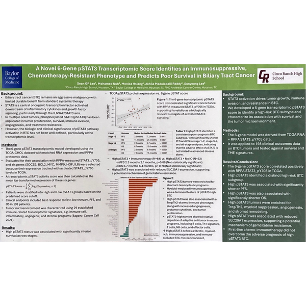
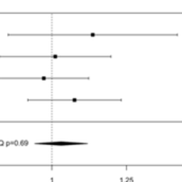
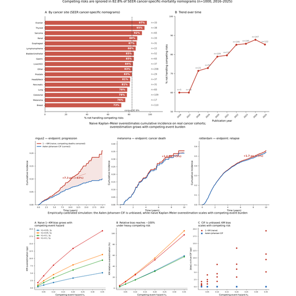
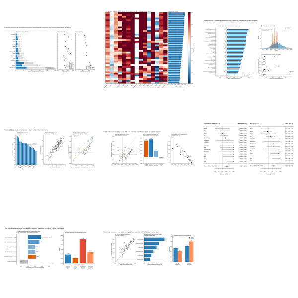
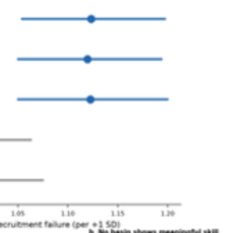

Hi, I'm Sean, a computational and translational oncology researcher working across gastrointestinal cancers, from biliary tract cancer to multi-omic analysis of the tumor microenvironment. I currently research in the Department of GI Medical Oncology at MD Anderson Cancer Center.
Working with researchers at MD Anderson and Baylor College of Medicine led to my presenting at the Cholangiocarcinoma Foundation Annual Conference, where I'm the youngest and only high schooler to present research. My first-author abstract from that work is published in The Oncologist. As I continue working with my MD Anderson professor this year, I'm attending ESMO Asia and the CCF conference again. I'm also co-founder and CTO of Sutura Genomics (YC Startup School 2026) and founder of Onco Research Scholars.
Outside the lab, I shoot photography. You can follow it at @sean.photodiary_.
Updates
- Mar 2027 Presenting at the Cholangiocarcinoma Foundation Annual Conference in Utah (Mar 22-25, 2027).
- Dec 2026 Presenting a poster at the ESMO Asia Congress at the Suntec Singapore Convention & Exhibition Centre in Singapore (Dec 4-6, 2026).
- Jul 2026 Mega Project with a bunch of friends and professors.
- Jul 2026 Working with students interning at Dartmouth, Harvard, Emory, UT Austin, SWE, Stanford, and IIT.
- Jul 2026 Posted a spatial-transcriptomics registration methodology preprint for Sutura Genomics on bioRxiv.
- Jul 2026 Napabucasin Phase 3 meta-analysis (4 trials, 3,383 patients) preregistered on OSF and under review at Clinical Colorectal Cancer.
- Jun 2026 Accepted out of 30,000 applicants to Y Combinator Startup School 2026 (admission ticket).
- Jun 2026 First-author pSTAT3 biliary tract cancer study published in The Oncologist (Oxford University Press).
- Jun 2026 Had a blast volunteering at the Texas Children's Hospital (video).
- May 2026 Attended the Cholangiocarcinoma Foundation Annual Conference (May 1-3, 2026).
- May 2026 Named the youngest presenter in the documented history of the Cholangiocarcinoma Foundation Annual Conference.
- Apr 2026 Co-founded Sutura Genomics, an AI spatial-biology startup, as CTO; now at 5-figure revenue.
- Apr 2026 Co-founded ThroughWay, a cancer financial-toxicity nonprofit, as CFO.
- Mar 2026 Built the Research Brain, an AI research system layered over a ~1,300-note oncology knowledge base (graph view).
- Jan 2026 Founded Onco Research Scholars, a student research-mentorship organization.
- Jul 2025 Attended the invitation-only DAVANCO oncology symposium in Bermuda.
Research
-

A 6-Gene pSTAT3 Transcriptomic Score Identifies an Immunosuppressive, Chemotherapy-Resistant Phenotype and Predicts Poor Survival in Biliary Tract Cancer -
Tissue tearing degrades optimal-transport registration of spatial transcriptomics beyond displacement magnitude: a multiseed deformation benchmark and a supervised graph cross-attention proof-of-concept
-

Napabucasin Across Four Registrational Phase 3 Trials in Advanced Gastrointestinal Cancers: A Complete-Enumeration Meta-Analysis Bounding the Survival Effect, and a Tested Non-Replication of the pSTAT3 Biomarker Signal -
A pan-cancer identifiability atlas for compartment-resolved pathway attribution from bulk transcriptomes
-

Competing risks are ignored in most SEER cancer-specific-mortality nomograms: a systematic audit with real-patient reanalysis and a validated correction pipeline -

Most published immunotherapy-response gene signatures do not outperform random gene sets, and collapse onto a single tumor-inflammation axis -

Limits of a satellite bloom-timing surrogate for match-mismatch: a global recruitment test and a regional prey-timing validation -
Tumor Phospho-STAT3 Marks a Shared Angiogenic-Fibrotic, Immune-Replete Microenvironment Across Gastrointestinal Cancers: A Multi-Omic Analysis of 1,274 Tumors
-
When can a pathway program be attributed to a tumour compartment from bulk RNA? An identifiability audit across immune-checkpoint cohorts
Experience
-
Sutura Genomics · Co-Founder & CTOAI platform for spatial-biology tissue reconstruction · 5-figure revenue · YC Startup School 2026Apr 2026 - present
-
Onco Research Scholars · Founder & PresidentInternational student research incubator · 120+ membersJan 2026 - present
-
ThroughWay · Co-Founder & CFONonprofit reducing financial toxicity for cancer patients; working with the MD Anderson Financial Clearance Center's executive directorApr 2026 - present
-
UT MD Anderson Cancer Center · Research InternComputational cancer genomics · GI Medical OncologyJan 2024 - present
-
Cholangiocarcinoma Foundation · ResearcherStatistical & survival modeling · Salt Lake City, Utah · RemoteJan 2026 - present
-
European Society for Medical Oncology (ESMO) · ResearcherSingapore · RemoteApr 2026 - present
-
Massachusetts Institute of Technology · ResearcherResearch internshipJan - Jun 2026
-
Baylor College of Medicine · ResearcherResearch internshipJan - Jun 2026